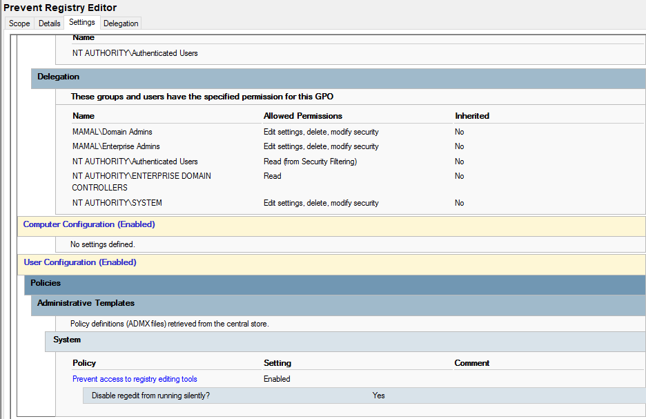

Prevent Registry Editor (Regedit) Access
Purpose
This policy disables access to the Windows Registry Editor (regedit.exe) for users. It is used to prevent unauthorized system modifications and protect system stability in a controlled computer lab environment.
How it works
When enabled, this Group Policy blocks the execution of Registry Editor. If a user attempts to open regedit, the system silently prevents it or displays a restriction message, depending on configuration settings.
How it is applied
- Open Group Policy Management Console (GPMC)
- Edit the User Configuration policy
- Navigate to: User Configuration → Policies → Administrative Templates → System
- Locate "Prevent access to registry editing tools"
- Set policy to Enabled
- Apply changes and run
gpupdate /force
Screenshot
Registry restriction policy as configured in Active Directory:
